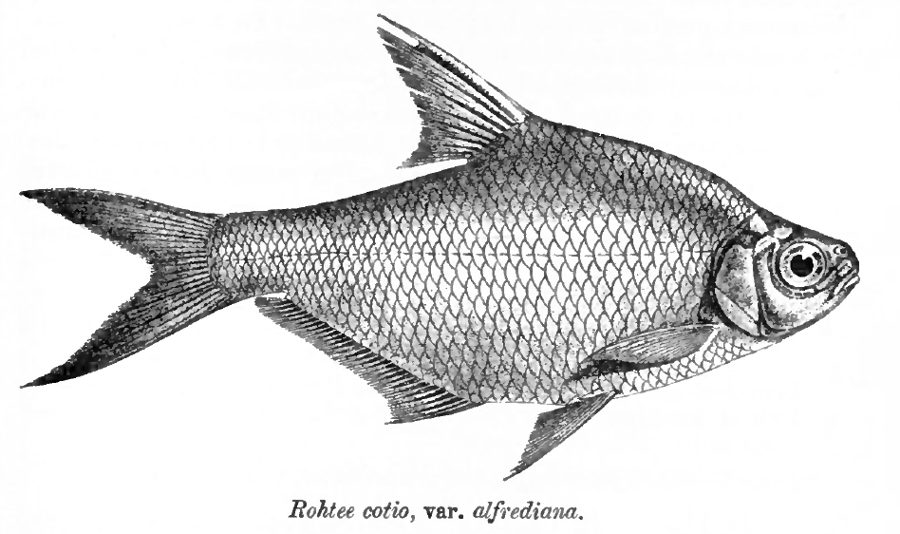

कोटियो मछलीCotio
Osteobrama cotio · Cyprinidae · FSH-0045

- Scientific name वैज्ञानिक नाम
- Osteobrama cotio (Hamilton, 1822)
- Family कुल
- Cyprinidae
- Hindi हिंदी
- कोटियो मछली
- Local names स्थानीय नाम
- cotio, cotio machhli, rohtee, chhota cotio, kotio
- Status here यहाँ की स्थिति
- native
- Movement आवागमन
- Resident, here all year
- Known from कहाँ दर्ज
- Others have published records from the wider Awadh–Purvanchal plain, none yet from Basti–Ayodhya अवध–पूर्वांचल से दूसरों के प्रकाशित अभिलेख, बस्ती–अयोध्या से अभी नहीं
- IUCN IUCN
- not evaluated
- Review समीक्षा
- not yet reviewed
When to look कब देखें
Present all year. साल भर मौजूद।
Uses and possibilities उपयोग और संभावनाएँ
Drawn from the documented uses in the profile below, where each is labelled traditional, current or a research lead. All uses →
Tell it apart from इनसे अलग पहचानें
कोटियो मछली / Cotio
Osteobrama cotio (Hamilton, 1822) — Cyprinidae
कोटियो मछली — मैदानी नदियों, तालाबों और बाढ़ के पानी से बने तालों में पाई जाने वाली एक छोटी, चपटी और चमकीली चांदी जैसी देसी मछली है। इसका शरीर दोनों तरफ से बहुत दबा हुआ और गहरा होता है, जिससे यह पानी में एक पतले सिक्के की तरह दिखती है। यह तलहटी और पानी की मध्य परतों में तैरते हुए काई और सूक्ष्म जीवों को खाती है, तथा ग्रामीण आहार में एक पौष्टिक छोटी मछली मानी जाती है।
Quick Identification त्वरित पहचान
| Feature | Description |
|---|---|
| Size | Small freshwater cyprinid; reaches about 15 cm TL (Froese & Pauly 2025) |
| Body Shape | Rhomboidal, strongly compressed laterally with a sharp abdominal keel (Hamilton 1822) |
| Head & Mouth | Small head; small terminal mouth lacking barbels entirely (Talwar & Jhingran 1991) |
| Colour | Silvery-white with a yellowish gloss; dark blotch behind operculum (Talwar & Jhingran 1991) |
| Dorsal Fin | Short with a serrated, bony spine situated behind pelvic fin origin (Hamilton 1822) |
| Anal Fin | Remarkably long, bearing 29 to 36 branched rays (Talwar & Jhingran 1991) |
| Scales | Small, delicate cycloid scales covering the body (Talwar & Jhingran 1991) |
Field tip: Look in slow-moving shallows of rivers and oxbow lakes. A small, paper-thin silvery fish with a very deep, arched back and an unusually long anal fin along the belly is the Cotio.
हिंदी: यह छोटी मछली पतले सिक्के जैसी चपटी और चमकीली चांदी के रंग की होती है। इसकी पीठ उठी हुई और पेट के नीचे का पंख काफी लंबा होता है।
Morphology आकारिकी
Size as given by FishBase (Froese & Pauly 2025):
| Measurement | Range | Source |
|---|---|---|
| Maximum length | 15 cm TL | Froese & Pauly (2025), FishBase |
Adult description:
Osteobrama cotio is characterized by an extremely compressed, deep, and rhomboidal body (Hamilton 1822). The dorsal profile rises steeply from the snout to the dorsal fin origin, forming a prominent hump, while the ventral profile is deeply convex and terminates in a sharp knife-like abdominal keel behind the pelvic fins (Talwar & Jhingran 1991). The head is small and compressed; eyes are large and situated in the anterior half of the head (Hamilton 1822). The mouth is small, terminal, and slightly oblique, completely lacking barbels (Talwar & Jhingran 1991).
The dorsal fin is short and pointed, supported by a strong, serrated bony spine (Talwar & Jhingran 1991). The anal fin is elongate, carrying 29 to 36 branched rays, which gives the fish exceptional stability in sluggish or standing water (Talwar & Jhingran 1991). The caudal fin is deeply forked with equal pointed lobes. The lateral line is complete and gently curved downward along the lower flank (Hamilton 1822).
Coloration is bright shimmering silvery with brassy reflections on the back and flanks (Talwar & Jhingran 1991). A diffuse dark blotch is present behind the upper margin of the gill cover, and a faint dark shoulder spot is often visible in live specimens (Hamilton 1822). The fins are translucent to pale yellowish.
हिंदी: इसका शरीर लगभग 15 सेमी तक लंबा, चौड़ा और चपटा होता है। पीठ पर कड़ा कांटेदार पंख और पेट के नीचे लंबा पंख होता है। शरीर का रंग चमकीला चांदी जैसा होता है।
Behaviour & Ecology व्यवहार और पारिस्थितिकी
The Cotio is a benthopelagic schooling fish native to lowland freshwater systems of the Gangetic plain (Talwar & Jhingran 1991). It prefers slow-flowing stretches of rivers, irrigation canals, floodplains, and weed-rich perennial tanks.
Schools of dozens of individuals move through open water and weed edges, staying in the middle to lower water columns (Daniels 2002). The compressed body morphology allows the fish to weave effortlessly through dense strands of submerged aquatic macrophytes such as Hydrilla and Vallisneria (Talwar & Jhingran 1991). It avoids torrential currents and retreats into deeper oxbow depressions during seasonal floods. It displays moderate tolerance to turbidity and low dissolved oxygen levels during hot summer months (Daniels 2002).
हिंदी: यह मछली नदियों, नालों और दलदली झीलों में झुंड बनाकर तैरती है। यह पानी में तैरते पौधों के बीच आसानी से घूमती है और तेज बहाव से बचती है।
Life Cycle / Phenology जीवन चक्र
Seasonal phenology in northern Indian alluvial waters across the agricultural year (Talwar & Jhingran 1991; Daniels 2002):
| Season / Month | Stage | Field Observation |
|---|---|---|
| July–August (Kharif monsoon) | Spawning & dispersal | Adults migrate to inundated grassy shallows to lay adhesive eggs (Talwar & Jhingran 1991) |
| September–November (Post-monsoon) | Juvenile growth | Fry and fingerlings feed heavily on zooplankton blooms in wetlands (Daniels 2002) |
| December–February (Rabi winter) | Sub-adult schooling | Schools assemble in deeper river pools and oxbow depressions (Talwar & Jhingran 1991) |
| March–May (Spring / Zaid) | Gonadal maturation | Feeding intensifies; gonads develop rapidly as water warms (Daniels 2002) |
| June (Pre-monsoon) | Pre-spawning congregation | Gravid adults gather at the mouths of monsoon flood channels |
Breeding takes place during the southwest monsoon when rising river water inundates adjacent grassy floodplains (Talwar & Jhingran 1991). Spawning occurs among submerged vegetation in shallow water. Females release adhesive eggs that attach to submerged grass blades and aquatic weeds. The eggs hatch after a few days, and tiny fry shelter in grass margins before moving into open river channels as waters recede (Daniels 2002).
हिंदी: मानसून की बारिश के दौरान यह मछली उथले पानी और जलमग्न घास में अंडे देती है। कुछ दिनों में अंडों से बच्चे निकलकर जलीय पौधों के बीच बढ़ते हैं।
Diet and Feeding Behaviour आहार
Osteobrama cotio is an omnivorous micro-feeder that consumes plankton, algae, and small benthic invertebrates (Talwar & Jhingran 1991):
Natural diet components:
- Filamentous algae, diatoms, and decaying plant detritus from macrophyte leaves and silt (Daniels 2002).
- Zooplankton, including water fleas (cladocerans), rotifers, and copepods (Talwar & Jhingran 1991).
- Small aquatic insects, including chironomid midge larvae and aquatic beetle larvae.
- Floating microscopic organic matter filtered through fine gill rakers.
हिंदी: यह काई, जलीय पौधों के सड़े हुए अंश, पानी के सूक्ष्म कीड़े और प्लवक (zooplankton) खाकर अपना पोषण करती है।
Predators / Natural Enemies शत्रु
Documented natural predators in northern Indian alluvial freshwater systems:
- Predatory fish: Murrels such as Channa striata (Snakehead Murrel), Channa punctata (Spotted Snakehead), and catfishes like Wallago attu (Striped Catfish) feed extensively on schooling cotio.
- Wading birds: Herons and egrets capture adults in shallow weed margins.
- Kingfishers: Plunge-diving kingfishers capture juveniles foraging near the water surface.
- Water snakes: Keelbacks pursue schools among submerged vegetation.
हिंदी: सौर, गिरई और बोआल जैसी बड़ी शिकारी मछलियाँ, बगुले और पानी के साँप इस छोटी मछली का शिकार करते हैं।
Agricultural / Human Relevance कृषि प्रासंगिकता
Nutritional value: Osteobrama cotio is an important small indigenous fish species (SIFS) across northern India. Although not commercially farmed in large aquaculture ponds, it is harvested from wild wetlands, rice fields, and canals by local villagers using cast nets and bamboo traps. Because it is consumed whole with bones and organs, it provides essential calcium, micronutrients, and vitamin A to rural communities.
Paddy-cum-fish ecosystem role: In rainfed rice fields, wild schools consume pest insects and mosquito larvae while cycling organic nutrients through excretion (Talwar & Jhingran 1991).
Traditional: Consumed as a nourishing traditional curry fish by riverine communities in Awadh.
Today: Sold fresh in rural village bazaars as an affordable small food fish.
Research direction (a lead, not a result): Assessing captive breeding techniques to incorporate Osteobrama cotio into polyculture ponds alongside major Indian carps.
हिंदी: यह एक छोटी देसी पौष्टिक मछली है जिसे ग्रामीण लोग बहुत चाव से खाते हैं। इसे पूरा खाया जाता है जिससे शरीर को भरपूर कैल्शियम और विटामिन मिलते हैं।
Expected Locally स्थानीय रूप से अपेक्षित
Not a field record. Written from published accounts for eastern Uttar Pradesh. No confirmed local sighting yet — if you have seen it, that is what the atlas needs.
अभी तक स्थानीय पुष्टि नहीं। यह विवरण प्रकाशित स्रोतों से है, किसी अवलोकन से नहीं।
The Cotio is expected in eastern Uttar Pradesh in perennial rivers, oxbow lakes (tals), and weed-filled village tanks connected to drainage networks. Look in slow shallows and weed patches from August through November. GBIF holds published records from the wider Awadh–Purvanchal plain, none yet from Basti–Ayodhya. A specimen photograph showing the deep compressed body, serrated dorsal spine, and long anal fin, submitted via the About page, would confirm the first local documentation for the project area.
Distribution वितरण
Global range: Native to the northern Indian subcontinent, distributed across India, Bangladesh, Nepal, and Pakistan in major river basins (Talwar & Jhingran 1991).
In India: Found across the Indus, Ganges, and Brahmaputra drainages, extending southward into the Mahanadi basin (Menon 1999).
In Uttar Pradesh: Recorded throughout the Ganges, Ghaghara, Rapti, and Gomti river networks and associated floodplain depressions.
In Basti district / eastern UP: Expected as a native resident in the Kuwano, Manwar, and Ghaghara drainage basins and floodplain wetlands.
हिंदी: यह भारत, बांग्लादेश, नेपाल और पाकिस्तान की नदियों में पाई जाती है। उत्तर प्रदेश में गंगा, घाघरा और कुआनो नदी प्रणालियों में यह सामान्य रूप से उपस्थित है।
Research Questions शोध प्रश्न
- How do seasonal flood pulses affect the recruitment of Osteobrama cotio into permanent oxbow lakes? / बाढ़ के पानी से इस मछली के बच्चों का तालाबों में फैलाव कैसे होता है?
- What is the comparative micronutrient content of wild-caught Cotio relative to farmed major carps?
- How do agricultural pesticide runoffs in drainage ditches affect larval development? / खेतों से बहने वाले कीटनाशकों का इस मछली के अंडों पर क्या असर पड़ता है?
- Can small mesh bamboo traps be managed sustainably to prevent overharvesting of spawning broods?
- What are the specific thermal limits of Osteobrama cotio during extreme summer heatwaves in shallow tanks?
Similar Species मिलती-जुलती प्रजातियाँ
| Species | How to tell apart | हिंदी | |
|---|---|---|---|
| Amblypharyngodon mola ([[mola_carplet\ | Mola Carplet]]) | Body less compressed; dorsal fin lacks a serrated bony spine; anal fin much shorter | मोला कार्पलेट — पीठ पर कांटेदार पंख नहीं होता और पेट का पंख छोटा होता है |
| Chela cachius ([[silver_hatchet_chela\ | Silver Hatchet Chela]]) | Abdomen forms an acute cutting edge from throat to pelvic fin; dorsal fin set far back | सिल्वर हैचेट चेला — पेट की धार गले से शुरू होती है और पीठ का पंख पीछे होता है |
| Pethia ticto ([[ticto_barb\ | Ticto Barb]]) | Body marked with two distinct black spots; anal fin short with only 5 branched rays | टिक्टो बार्ब — शरीर पर दो काले धब्बे और छोटा गुदा पंख |
Field rule: A deep-bodied, laterally compressed silvery cyprinid with a serrated bony dorsal spine and an extraordinarily long anal fin of over 28 rays is Osteobrama cotio.
हिंदी: मोला मछली की पीठ पर कड़ा कांटा नहीं होता और टिक्टो बार्ब के शरीर पर दो काले निशान होते हैं, जबकि कोटियो का शरीर बहुत चपटा और गुदा पंख बहुत लंबा होता है।
Taxonomy & Classification वर्गीकरण
Original description. Described by Francis Hamilton in 1822 as Cyprinus cotio in An Account of the Fishes Found in the River Ganges and Its Branches, page 339. Type locality: Ponds and ditches of Bengal.
Subspecies. Monotypic in modern taxonomic revisions; forms formerly recognized as subspecies (O. c. cotio, O. c. cunma, O. c. peninsularis) have been elevated or synonymized (Menon 1999).
Family and order placement. Order Cypriniformes, family Cyprinidae, subfamily Danioninae (or Xenocypridinae depending on phylogenetic classification). The genus Osteobrama Heckel, 1843, comprises deep-bodied Asian carps.
Phylogenetic notes. Osteobrama cotio is closely related to Osteobrama feae and Osteobrama belangeri, distinguished by its higher anal fin ray count and serrated dorsal spine (Talwar & Jhingran 1991).
IUCN status rationale. Not evaluated (NE) on the global IUCN Red List of Threatened Species. It maintains widespread, abundant wild populations across the Gangetic plains.
हिंदी: इसका वैज्ञानिक नाम Osteobrama cotio है और यह Cyprinidae (कार्प) परिवार की सदस्य है। प्रकृति में इसकी संख्या पर्याप्त और सुरक्षित है।
Photo Gallery फोटो गैलरी
No photos yet — add field photos to media/species/cotio/ and run node scripts/sync_photos.js.
Photos needed आवश्यक फोटो
- [ ] Freshly collected adult showing deep silvery body and serrated dorsal spine (चपटे शरीर और पीठ के कांटे की तस्वीर)
- [ ] Close-up of head and mouth showing absence of barbels (सिर और बिना मूंछ वाले मुँह की तस्वीर)
- [ ] Live school swimming near submerged aquatic vegetation in clear water (पानी में तैरता झुंड)
- [ ] View of long anal fin along the ventral margin (पेट के लंबे पंख का विवरण)
References संदर्भ
- Hamilton, F. (1822). An Account of the Fishes Found in the River Ganges and Its Branches. Archibald Constable and Company, Edinburgh, p. 339.
- Talwar, P. K. & Jhingran, A. G. (1991). Inland Fishes of India and Adjacent Territories, Vol. 1. Oxford & IBH Publishing Co., New Delhi, pp. 366–367.
- Menon, A. G. K. (1999). Check list - fresh water fishes of India. Records of the Zoological Survey of India, Occasional Paper No. 175, p. 55.
- Daniels, R. J. R. (2002). Freshwater Fishes of Peninsular India. Universities Press, Hyderabad, pp. 64–66.
- Froese, R. & Pauly, D. (Eds.) (2025). FishBase. World Wide Web electronic publication.
- GBIF Occurrence Data — Osteobrama cotio, India (2025).
Source file: species/fauna/fish/cotio.md